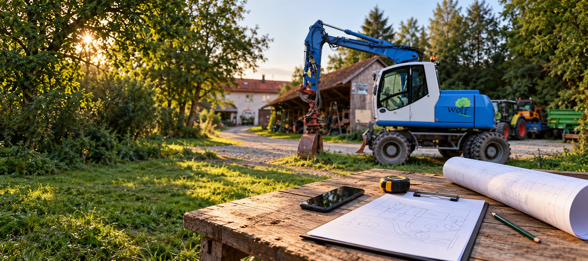
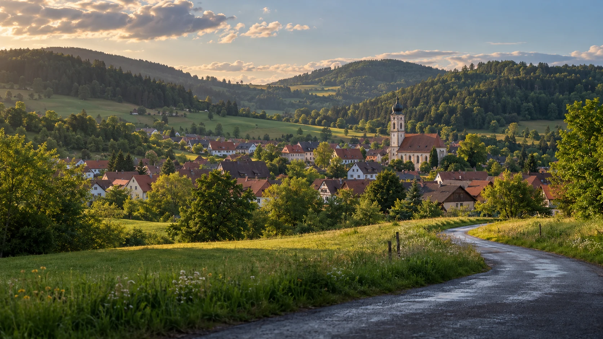

Kontakt
Lassen Sie uns
Ihr Projekt anpacken.
Eine Idee, eine Frage oder schon ein konkreter Plan? Wir freuen uns darauf, von Ihnen zu hören.
Starke Leistungen. Saubere Ergebnisse.
Lassen Sie uns loslegen
Gemeinsam bringen wir Ihr Projekt voran.
Wir freuen uns auf Ihre Anfrage und beraten Sie gerne persönlich zu Ihrem Vorhaben.
71540 Murrhardt
Am besten mit ein paar Angaben zu Ort, Umfang und gewünschtem Zeitraum.

MurrhardtKirchenkirnberg · Baden-WürttembergHier sind wir zu Hause
Murrhardt und Umgebung.
Schmiedgasse 28
71540 Murrhardt
Für einen persönlichen Termin stimmen Sie sich bitte vorab telefonisch mit uns ab.
Route planenGut zu wissen
Fragen vor dem ersten Gespräch.
Wo sind Sie im Einsatz?
Unser Standort ist Murrhardt. Wir betreuen Projekte in Murrhardt und Umgebung. Senden Sie uns den Einsatzort, dann klären wir die Möglichkeiten.
Wie erhalte ich ein Angebot?
Beschreiben Sie uns kurz Ihr Vorhaben, den Standort und den gewünschten Zeitraum. Anschließend klären wir die Details und bei Bedarf einen Termin vor Ort.
Kann ich Fotos zu meinem Projekt schicken?
Gerne. Sie können Fotos direkt an Ihre E-Mail anhängen oder über WhatsApp senden. Das Formular bereitet den Text für Ihre Nachricht vor.
Bieten Sie feste Pauschalpreise an?
Jedes Vorhaben hat eigene Anforderungen. Nach der Abstimmung von Umfang und Gegebenheiten erhalten Sie ein individuelles Angebot.